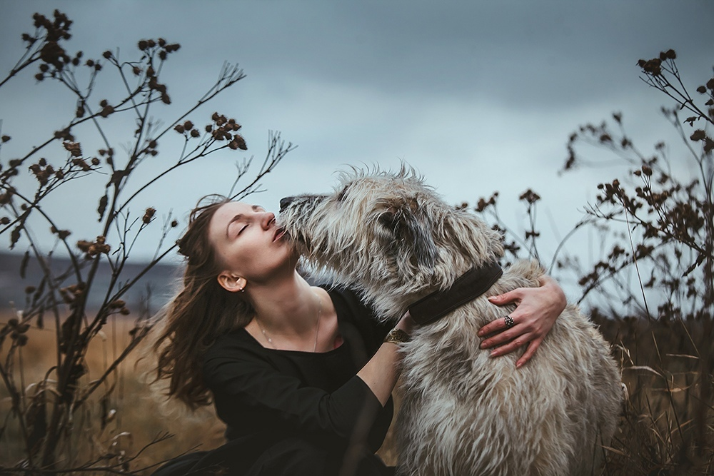
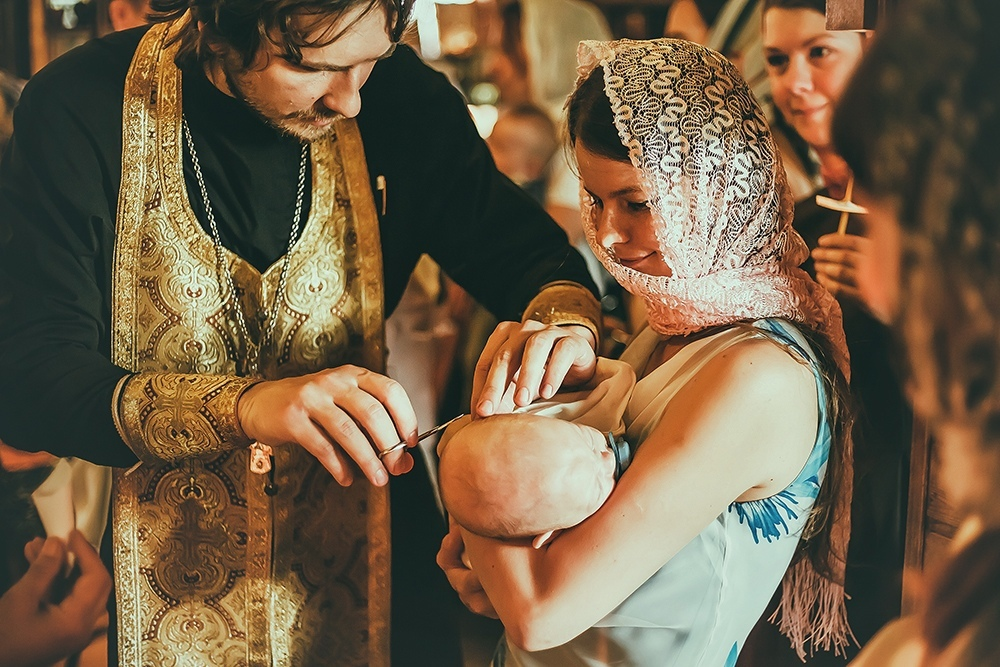
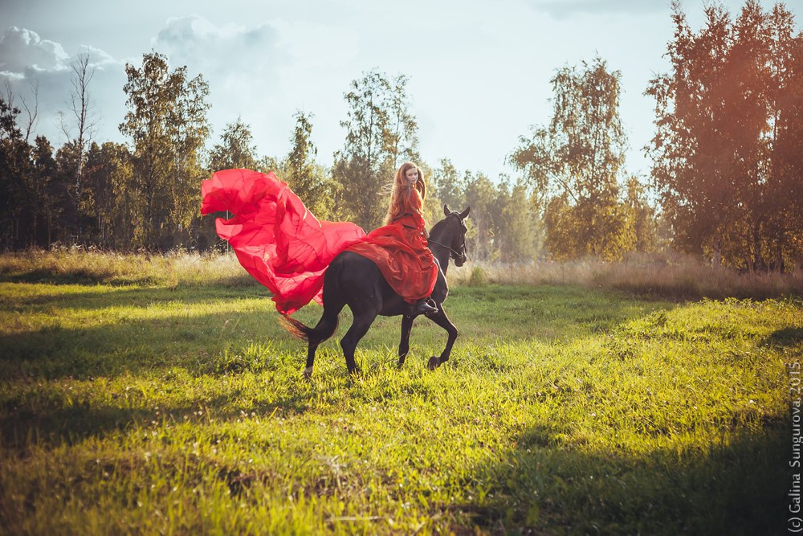
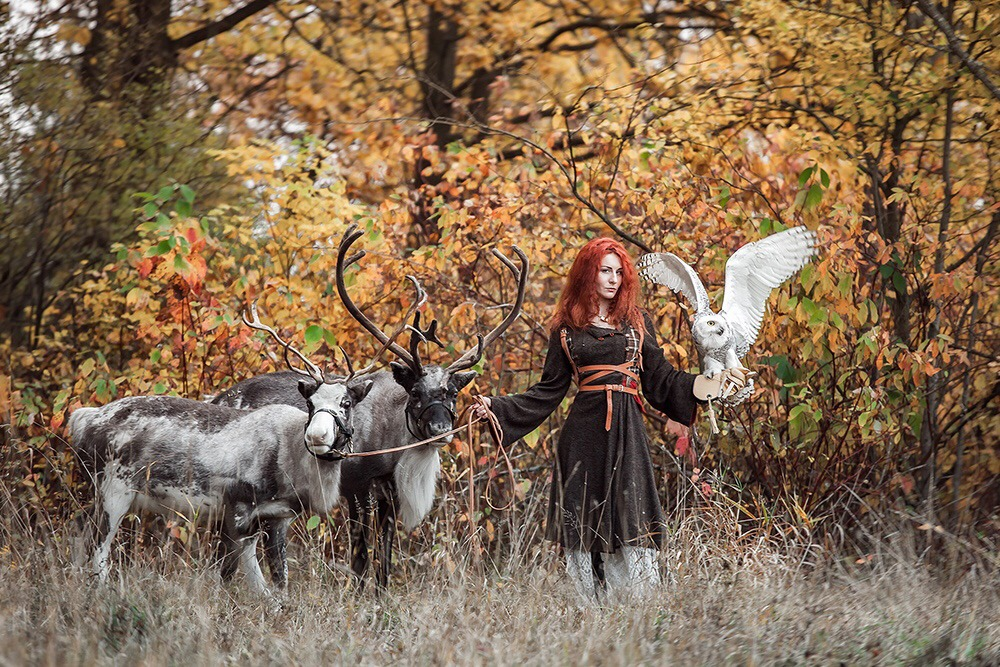
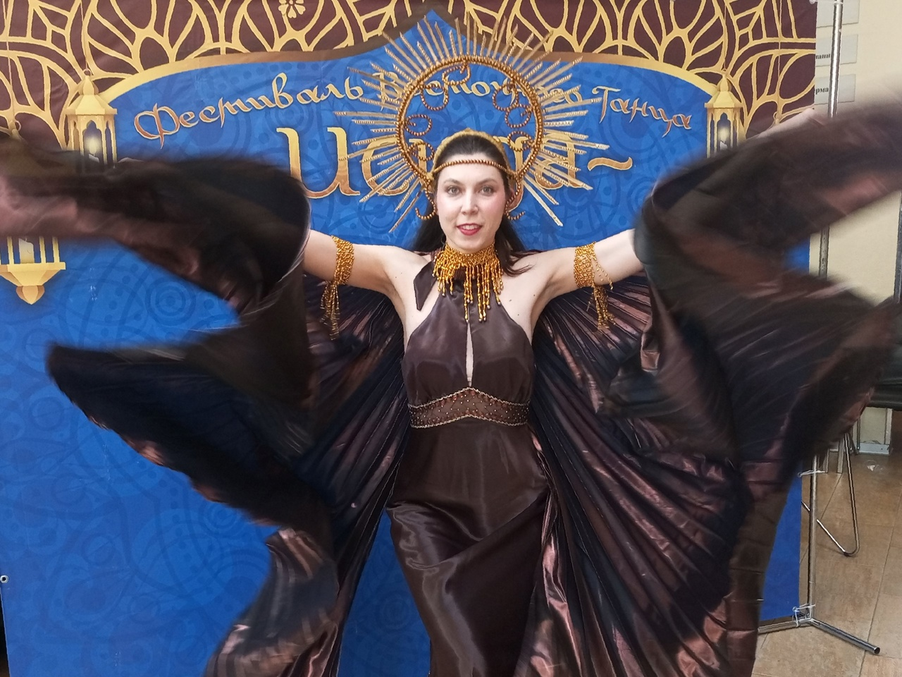

До курса Галина снимала по выходным за 3000 рублей, и, несмотря на плотный график, доход был небольшим. После курса не только изменила подход к себе и профессии, но и подняла цену в 2–3 раза — теперь съёмки приносят от 25 до 100 тысяч в месяц.
✨ Главное — появилась уверенность, выстроилась система, и теперь Галина спокойно совмещает творчество, работу и жизнь с тремя детьми без страха остаться без дохода.
Мы взяли у нее короткое интервью:
— Расскажи, что было до курса, какой средний доход был в месяц? Сколько клиентов?
— Это было давно, до ковида, поэтому в точных числах могу наврать. Съёмки были каждые выходные, в том числе по несколько съемок в день, периодически и по будням, иногда - свадьбы. Но за обычную съёмку я брала 3000 рублей, что укладывалось в средний ценник по городу, но в абсолютных величинах было очень мало.

— А на курс ты пришла тоже до ковида? или после? Какие сложности были во время обучения на нашем курсе? Насколько сложно было учиться? За сколько прошла обучение?
—Насколько я помню, незадолго до ковида - я уроки проходила, сидя на даче в самоизоляции. Сложности были только с моей стороны, технические: слабый сигнал связи. Со стороны куратора и Евгении Брун все было очень четко, понятно, доступно. Давалось разумное время на выполнение заданий. Но до конца я так и не прошла))) Заказов стало больше, я подняла цену, потом еще, и ещё, и если честно, немного подзабила на дальнейшее совершенствование группы. Когда-нибудь я обязательно пройду до конца. Я потом ещё несколько коротких интенсивов проходила .

— Каково было работать с куратором, что было полезно, мотивировало ли это тебя? Как считаешь, без куратора получилось бы так же?
— Да, без куратора бы получилось, но куратор следила за сроками и подпинывала в нужный момент. Ну и указывала на какие-то недоработки по заданиям.
— Какие сейчас действия делаешь для привлечения клиентов? Как часто пишешь посты? Запускаешь ли рекламу?
— У меня уже пару лет висит закреп с голосованием - он до сих пор работает и приводит людей. Посты в группу пишу, к своему стыду, нерегулярно, на личной странице хотя бы раз в неделю. Ну и сториз, клипы. Реклама сейчас не нужна. Я вообще так себе группу велу, тут я троечница . Могла бы лучше.

Основное, что я почерпнула из обучения – это правильное отношение к себе и к своему ремеслу. У меня как будто бы произошла генеральная уборка в голове, и все стало ясно и просто. А учитывая, что рядом были такие же ребята, которые тоже учились, но при этом мы все друг друга поддерживали и помогали – сложился настоящий клуб единомышленников. Это очень ценно и мощно: понимать, что ты не одна, и всё ты делаешь правильно.
А чего-то не можешь – научат!
Поэтому у меня и съёмка сейчас стоит не 3000 рублей, а от 8000.
Ну и - это, наверное, не для публикации. Я просто сейчас ставку делаю на другое. Люди в большинстве своём фоткаются по выходным. А у меня трое детей с какими-то своими движухами по выходным, то конкурсы, то поездки, и я решила, что мне надоело выбирать между заработком и семьей. Поэтому я вышла на пятидневку по вообще не связанной с моим творчеством специальности.

Если нужна съёмка в будни – меня спокойно отпускают. Также я довольно рано освобождаюсь и могу снимать вечером, особенно в летнее время. Но загруженность в итоге все равно такая, что реклама мне точно не нужна) Я скорее ещё ценник подниму.
— А можешь поделиться, как изменилась жизнь, когда увеличился доход? Может что-то купила себе? Съездила в путешествие? Что-то смогла сделать, чего раньше не могла позволить себе)
— Да, я сейчас занялась танцами и с чистой совестью покупаю себе новые костюмы. Если траты внезапно больше обычного – я спокойно понимаю, что просто надо немного больше поработать, и всё, никаких проблем.

— А как с отдыхом? Покупками чего-то?
— С этим все в порядке, но это не только съемки, но и моя вторая работа и доходы мужа.
— Все, остался только вопрос, сколько сейчас зарабатываешь? Сколько в среднем в месяц? Сколько клиентов? А вот примерно сколько за год было прошедший заработано?
— Чисто съёмками от 25 до 100 000 в месяц. Честно говоря, за год не считала) У меня просто совокупный доход - съёмки, другая работа на пятидневке, периодически еще какие то подработки (как модель, например) - от 150 до 200 к в месяц. Для многодетной женщины неплохо, на мой взгляд)
— Галина, спасибо большое, очень радуют твои результаты. И приятно получить твою обратную связь.